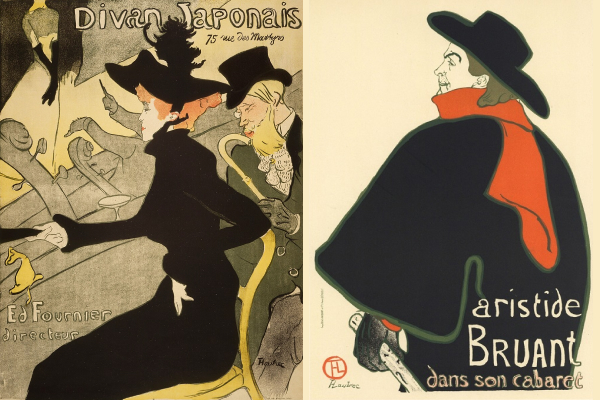
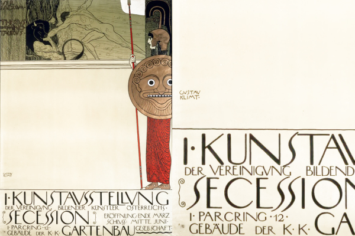
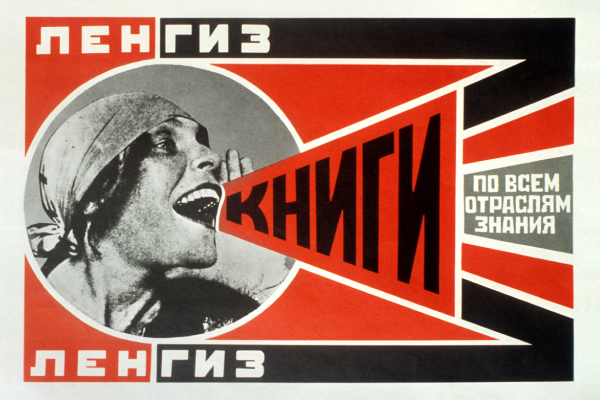

Анри де Тулуз-Лотрек
«Японский диван» (1891)
Реклама кафе-шантана «Японский диван», заложившая основы рекламного плаката.
Стиль: Постимпрессионизм / Ар-нуво
Плоские цветовые пятна, выразительный силуэт, японская гравюрная эстетика и гротескные персонажи.
- Разрешение: 600×400 px
- Техника: Цветная литография
- Эпоха: 1890-е годы

Альфонс Муха
«Жисмонда» (1894)
Афиша для спектакля с Сарой Бернар, принесшая художнику мировую славу.
Стиль: Ар-нуво (Модерн)
Изящные растительные орнаменты, пастельная гамма, характерные плавные контуры и византийские мотивы.
- Разрешение: 600×400 px
- Техника: Литография
- Эпоха: Конец XIX века

Густав Климт
«Плакат для I выставки Венского Сецессиона» (1898)
Аллегорическая сцена битвы Тезея с Минотавром, символизирующая победу нового искусства над консервативным академизмом.
Стиль: Венский сецессион (Югендстиль)
Смелое вертикальное кадрирование, сочетание детализированной античной графики и выразительного пустого пространства (асимметрия).
- Разрешение: 600×400 px
- Техника: Цветная литография
- Эпоха: Рубеж XIX–XX веков

Эль Лисицкий
«Клином красным бей белых» (1919–1920)
Классика супрематического плаката, где идеологический конфликт сведён к предельно выразительным геометрическим фигурам.
Стиль: Супрематизм / Авангард
Символический красный треугольник, рассекающий белый круг, динамика пространства и лаконичная акциденция.
- Разрешение: 600×400 px
- Техника: Литография
- Эпоха: Гражданская война / Авангард

Герберт Байер
«Выставка Баухаус» (1923)
Авангардная работа мастера школы Баухаус в Веймаре.
Стиль: Конструктивизм / Баухаус
Диагональная динамика, отказ от прописных букв, базовые геометрические формы (круг, треугольник, квадрат).
- Разрешение: 600×400 px
- Техника: Типографика и фотомонтаж
- Эпоха: Веймарская республика

Йозеф Альберс
«Взаимодействие цвета» (Плакаты Баухауса)
Исследования визуального восприятия и оптических иллюзий преподавателя легендарной школы Баухаус.
Стиль: Баухаус / Геометрический абстракционизм
Вложенные цветовые плоскости, оптические эффекты контраста и строгая модульная структура.
- Разрешение: 600×400 px
- Техника: Шелкография
- Эпоха: Модернизм XX века

Александр Родченко
«Книги по всем отраслям знания» (Ленгиз, 1924)
Знаменитый плакат с Лилей Брик, ставший всемирной иконой конструктивизма и агитационного дизайна.
Стиль: Советский конструктивизм
Диагональная композиция-рупор, смелый фотомонтаж, геометрическая плашечная геометрия и мощная типографика.
- Разрешение: 600×400 px
- Техника: Фотомонтаж, литография
- Эпоха: 1920-е годы

Йозеф Мюллер-Брокманн
«Musica Viva» (Концертные афиши Цюриха, 1950–60-е)
Вершина рационального швейцарского дизайна: визуализация ритма и звука через чистую геометрию.
Стиль: Швейцарская школа (Интернациональный стиль)
Строгая модульная сетка, математические пропорции, гармония кругов и акцидентный шрифт без засечек (Akzidenz-Grotesk).
- Разрешение: 600×400 px
- Техника: Офсетная печать
- Эпоха: 1950–1960-е годы

Эмиль Рудер
«Типографика как искусство» (Базельская школа)
Плакаты теоретика шрифта и автора фундаментального труда «Типографика», определившего современную книжную и плакатную верстку.
Стиль: Базельская типографическая школа
Текст как главный графический образ, выверенные контрасты кеглей, ритм межбуквенных и межстрочных интервалов.
- Разрешение: 600×400 px
- Техника: Высокая и офсетная печать
- Эпоха: Середина XX века

Армин Хофманн
«Жизель» (1959)
Эталонный швейцарский театральный плакат для Базельского балета.
Стиль: Швейцарская школа (Интернациональный стиль)
Драматический контраст черного и белого, зернистое размытие движения балерины и строгая точка шрифта.
- Разрешение: 600×400 px
- Техника: Офсетная печать
- Эпоха: XX век (модернизм)